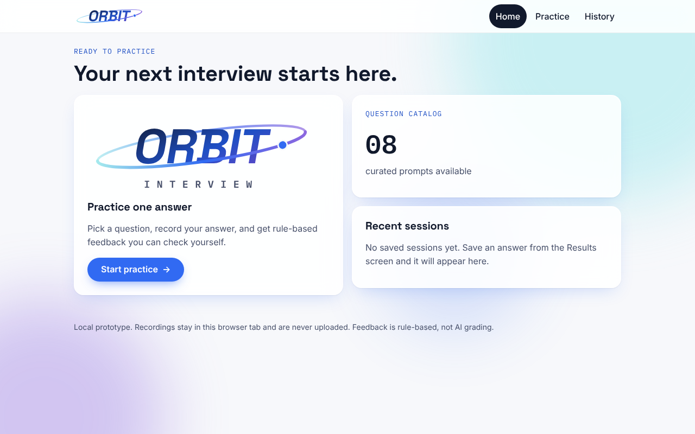

Entry 001 · Introduction
Introducing Interview Orbit: building an honest interview-practice workflow
My name is Brandon Kelly, and I am a Computer Science student at Full Sail University concentrating on artificial intelligence. Before entering software development, I built much of my creative practice around audio engineering, music, and filmmaking. Those disciplines taught me to listen closely, iterate carefully, and understand how technical decisions shape someone's experience.
That background is part of what led me to Interview Orbit, a project focused on a familiar challenge: knowing what to say in a job interview is different from actually saying it out loud. An applicant can prepare a thoughtful answer on paper, then rush, hesitate, or lose the structure when speaking. I wanted to explore a tool that makes rehearsal more approachable and gives people specific feedback they can use on the next attempt.
Interview Orbit is currently an early alpha prototype built around a simple practice loop: choose an interview question, record an answer, review clearly labeled feedback, and revisit the session from History. The prototype uses React and TypeScript, the browser's microphone APIs, and IndexedDB for local session information. It deliberately does not claim to transcribe audio automatically or to deliver an AI evaluation that has not been implemented. That distinction matters to me: an application should be clear about what it measured, what it inferred, and what it cannot yet do.

My goal for this course is to become more disciplined about designing systems that remain understandable as they grow. I want to improve how I separate domain logic from the user interface, test failure conditions rather than only the happy path, make accessible design decisions, and document the trade-offs behind each technical choice. I also want to understand how an AI-powered coaching feature could be introduced responsibly—with appropriate safeguards, observable inputs and outputs, and a way to check whether its feedback is actually useful.
In future development entries, I plan to focus on a concrete problem, the options I considered, the solution I implemented, and the tests or evidence that support it. I will start with a particularly important issue in this project: what should happen if someone requests microphone permission and leaves the recording screen before answering the browser prompt? Solving problems like that is how I want to turn a promising prototype into dependable software.
My aim is not just to finish an assignment. It is to leave this course with a stronger engineering process, a product I can explain and improve, and a development record that reflects both successes and limitations.